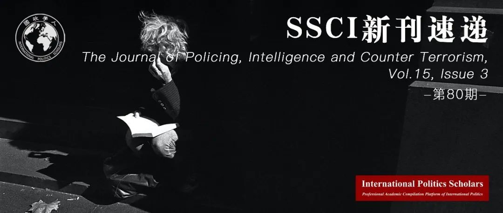

收录于合集 #新刊速递 123个

期刊简介
The Journal of Policing, Intelligence and Counter Terrorism (《警务、情报和反恐》, JPICT)旨在为世界各地区的警务研究、情报研究、恐怖主义研究提供高质量的学术论文，该期刊最新影响因子为2.857。
本期编委
【编译】 缪高意、石稚瑄、池佳曈、朱忻博、黎开朗
【校对】 徐一君、阮镇炜、朱家羲、丁伟航
【审核】 晋玉、徐一君、朱文菡、池佳曈
【排版】 毛雅欣
【美编】 臧泽华

本期目录
1、新冠疫情：恐怖组织的挑战还是机遇？
COVID-19: a challenge or opportunity for terrorist groups?
2、社交媒体与孟加拉国大学生的激进化
Social media and radicalisation of university students in Bangladesh
3、风险、激进化与改造：监禁恐怖分子
Risks, radicalisation and rehabilitation: imprisonment of incarcerated terrorists
4、情报处理员对与线人访谈过程的感知
Source Handler perceptions of the interviewing processes employed with informants
5、不满与身份的关系:理解身份认同过程和污名化在穆斯林对恐怖主义不满看法中的作用
The grievance-identity relationship: understanding the role of identity processes and stigmatization on Muslims’ perceptions of terrorist grievances
01
新冠疫情：
恐怖组织的挑战还是机遇？
【题目】 COVID-19: a challenge or opportunity for terrorist groups?
【作者】 Abdul Basit 南洋理工大学RSIS研究员
【摘要】 新冠疫情在急速变化地缘政治环境和技术变革之中爆发，这为恐怖组织带来了新的挑战和机遇。恐怖组织正努力在封锁期间发动常规攻击的同时，也在互联网上招募和激化年轻人。同样，虽然旅行禁令限制了恐怖分子的行动能力，但他们正在利用时间发展新技能。本文探讨了恐怖分子面临的机遇和挑战，以评估不断演变的战略格局。尽管基地组织和伊斯兰国的力量有所削弱，但是宗教恐怖主义仍然继续存在。除此之外，西方极右恐怖主义的出现，使得现有的恐怖主义格局变得复杂和长期化。虽然互联网和社交媒体彻底改变了恐怖分子的招募和激进方式，但人工智能、无人机技术和3D打印等新兴技术有可能改变未来恐怖暴力的面貌。
The Covid-19 contagion has emerged amid a rapidly changing geopolitical environment and technological transformations. These developments have created new opportunities and challenges for terrorist groups. Whereas terrorist groups are struggling to launch conventional attacks during the lockdown, they have a captive young audience on the internet to recruit and radicalise. Similarly, though travel restrictions have limited terrorists’ mobility, they are using the time to develop new skills. This article examines the opportunities and challenges for terrorists to provide an assessment of the evolving strategic landscape. The persistence of religious terrorism, despite the weakening of Al-Qaeda and the Islamic State, alongside the emergence of the far-right terrorism in the West, renders the existing terrorist landscape complex and chronic. While the internet and social media revolutionised terrorist recruitment and radicalisation, emerging technologies such as artificial intelligence, drone technology and 3D-printing can potentially change the face of future terrorist violence.
【编译】 缪高意
【审核】 徐一君 晋玉
02
社交媒体与孟加拉国大学生的激进化
【题目】 Social media and radicalisation of university students in Bangladesh
【作者】 Sajid Amit，孟加拉国文科大学企业与社会中心主任和EMBA项目主任。Imran Rahman，孟加拉国文科大学商学院院长。Sadiat Mannan，孟加拉国文科大学企业与社会中心。
【摘要】 尽管与激进主义及其对策相关的学术研究越来越多，但社交媒体在孟加拉国大学生激进化过程中的作用鲜少获得关注。本研究通过调查数据检验了孟加拉国大学生的线上行为和社交媒体使用状况，填补了这一研究空白。本研究发现，在大学生中，对伊斯兰教的正统理解与激进解读之间几乎没有区别，且社交媒体上泛滥的内容多是创教以来穆斯林被征服的故事。许多（地缘政治）冲突被年轻人看作是西方帝国主义叙事的延续。本研究识别了这种不和谐现象的核心，认为穆斯林被征服的思想源于社会文化的影响，并因社交媒体的使用而加剧。
While there is growing research on radicalisation and its countermeasures, in the context of Bangladesh, there is a paucity of academic studies on the role of social media in the radicalisation of university students. This research addresses the gap by using survey data to examine the online behaviour and social media use of the university-going youth in Bangladesh. The study finds that there is very little distinction between accurate Islamic theological understandings and radical interpretations of Islam among university-going youth, and there is a proliferation of social media content that tell tales of subjugation of Muslims since the inception of Islam. Many (geopolitical) conflicts are seen by the youth as a continuation of the narrative of Western imperialism. The research identifies the core of the dissonance and argues that the idea of Muslim subjugation stems from sociocultural influences and is exacerbated by social media use.
【编译】 石稚瑄
【校对】 阮镇炜
【审核】 徐一君
03
风险、激进化与改造：
监禁恐怖分子
【题目】 Risks, radicalisation and rehabilitation: imprisonment of incarcerated terrorists
【作者】 Amber Hart，澳大利亚查尔斯特大学教授
【摘要】 2019年11月和2020年2月伦敦受到的由曾被指控参与恐怖主义犯罪的人发起恐怖袭击，极大增加了世界各地关押恐怖主义罪犯的复杂性。通过将监狱描述为“激进化的温床”，人们对臭名昭著的恐怖分子的担忧无疑受到了加强。若监狱存在使个人或暴力极端主义罪犯进一步激进化的风险，就必须作出有关管理被监禁的恐怖分子的政策规定。文章以澳大利亚为背景，分析了目前世界各地实施中的三种囚犯管理方法。为识别恐怖主义罪犯的复杂性，文章讨论了集中、分散和鲜少使用的分层方法有关的优势与挑战，探讨了激进囚犯被释放后的风险与管理办法。最后，介绍了澳大利亚提出的一项倡议，该倡议对被证明有极高犯罪风险的潜在犯罪者的管理与监禁进行规定，从而减轻风险。文章得出结论，如果采取集中的手段，则必须更加重视对已释放罪犯的监控与改造。
The terrorist attacks of November 2019 and February 2020 in London, perpetrated by individuals who had previously been incarcerated on terrorism charges, reinforces the complexity of the challenges that prisons around the world manifest in relation to terrorist offenders. Frequently articulated through descriptions of prisons as ‘hotbeds for radicalisation’, concerns are undoubtedly reinforced by the tales of notorious terrorists such as Ayman al- Zawahiri. If prisons do pose a risk of radicalising individuals,or of further radicalising violent extremist offenders, informed policy decisions relating to the management of incarcerated terrorists are essential. Focusing on the Australian context, this paper analyses three prisoner management methods currently implemented around the world. In recognising the complexity of incarcerating terrorist offenders,benefits and challenges relating to the concentration,dispersal and the seldom-used tier method are identified and discussed. The paper examines the risks and management of radicalised prisoners postrelease. Finally, an Australian initiative is introduced,which legislates supervision or detention of those proven to be an unacceptable risk of committing a serious terrorism offence, as a potential way to mitigate those risks. The paper concludes that if concentration is to be utilised, greater emphasis must be placed on rehabilitation and monitoring upon release.
【编译】 池佳曈
【校对】 朱家羲
【审核】 朱文菡
04
情报处理员对与线人访谈过程的感知
【题目】 Source Handler perceptions of the interviewing processes employed with informants
【作者】 Jordan Nunan, 朴次茅斯大学刑事司法研究所博士在读，其目前研究主要关注人工情报(HUMINT)收集。Ian Stanier，利物浦约翰摩尔斯大学高级警务中心资深讲师，研究方向为政治哲学、情报、监控、刑事司法、大数据等。Rebecca Milne，朴次茅斯大学刑事司法研究所教授，研究专长有问卷调查、访谈、犯罪心理学、法律及法律研究、暴力预防等。Andrea Shawyer，朴次茅斯大学刑事司法研究所资深讲师，主要研究兴趣为调查性访谈，特别关注紧急情况下的前线沟通和测谎。Dave Walsh，德蒙福特大学法学院刑事调查教授，研究重点是对受害者（包括儿童）、证人和嫌疑人的调查访谈，以及调查人员的决策。
【摘要】 准确、详细和及时的情报收集有助于关键的执法决策。然而，所收集到的情报的质量和数量在很大程度上取决于获取情报时所使用的访谈技术。情报从业者的感知是发展对情报收集实践理解的关键。但是，到目前为止还没有任何研究探讨过英国的情报处理员对与线人访谈过程的感知。本研究采访了来自英国反恐情报部门的24名情报处理员。从采访中产生了五个主题：（一）访谈和汇报的比较；（二）情报访谈中的和平模式；（三）有效沟通的重要性；(四) 情报处理员对认知检索技术的使用；（五）情报处理员访谈培训。访谈和汇报之间的感知共性为调查性访谈研究及实践转向人工情报(HUMINT)的收集提供了支持，这重申了主题（二）（三）（四）。最后，受访者强调需要提供关于情报收集技术的额外培训，因为负责收集情报的警务人员可以从基于调查性访谈研究和专业实践的进一步专业发展中受益。
The collection of accurate, detailed, and timely intelligence buttresses critical law enforcement decision-making. However, the quality and quantity of the intelligence gathered relies heavily upon the interviewing techniques used to retrieve it. Theperceptions of intelligence practitioners are key to developing an understanding of practices concerning intelligence collection. Yet, to date, no research has been undertaken that explores the United Kingdom’s Source Handlers’ perceptions of the interviewing processes employed with informants. The present study interviewed 24 Source Handlers from Counter Terrorism Dedicated Source Units in the United Kingdom. Five themes emerged from the interviews, (i) a comparison between interviewing and debriefing; (ii) the PEACE model in intelligence interviews; (iii) theimportance of effective communication; (iv) Source Handlers’ use of cognitive retrieval techniques; and, (v) Source Handler interview training. The perceived commonalities between interviewing and debriefing provided support for the transferability of investigative interviewing research and practices into the collection of Human Intelligence (HUMINT), reiterating themes (ii), (iii), and (iv). Finally,participants highlighted a need for additional training concerning intelligence gathering techniques, as police officers who are responsible for gathering HUMINT could benefit from further professional development based on investigative interviewing research and professional practices.
【编译】 朱忻博
【校对】 徐一君
【审核】 朱文菡
05
不满与身份的关系:理解身份认同过程和污名化在穆斯林对恐怖主义不满看法中的作用
【题目】 The grievance-identity relationship: understanding the role of identity processes and stigmatization on Muslims’ perceptions of terrorist grievances
【作者】 Harley Williamso，格里菲斯大学犯罪学研究院博士后研究员。Kristina Murphy，格里菲斯大学犯罪学教授。Elise Sargeant，格里菲斯大学犯罪学讲师。
【摘要】 对于恐怖分子不满的正当性的认同可以增强恐怖组织的合法性。当反恐成为世界各地政治议题的重中之重，理解这种看法的来历可以凸显一些恐怖主义思想是如何被证实的。本文通过调查住在澳大利亚的800名穆斯林，揭示了社会心理过程可能会将伊斯兰恐怖分子的不满塑造为正当。本文具体探讨了污名化和社会认同是如何与伊斯兰恐怖分子有合理的不满这一穆斯林的观点相联系。本文认为社会认同可以缓和因恐怖分子的不满的正当性，而感到被污名化的影响，并讨论了这项研究背后的理论与政策含义。
Believing that terrorist grievances are valid can strengthen the legitimacy of a terrorist organisation. As countering terrorism is high on political agendas worldwide, understanding the antecedents of such beliefs may spotlight how some terrorist ideals come to be validated. Using survey data from 800 Muslims living in Australia, this study discerns how social-psychological processes may shape beliefs that Islamic terrorist grievances are valid. Specifically, we examine how stigmatisation and social identity are associated with Muslims’ perceptions that Islamic terrorists have valid grievances. We find that social identity can moderate the effect of feeling stigmatisedon the belief that terrorist grievances are valid. Theoretical and policy implications of this research are discussed.
【编译】 黎开朗
【校对】 丁伟航
【审核】 池佳曈
好好学习，天天“在看”
国政学人
支持学术公益与知识传播
微信扫一扫赞赏作者 __赞赏
已喜欢，对作者说句悄悄话
取消 __
发送给作者
发送
最多40字，当前共字
上一页 1/3 下一页
长按二维码向我转账
支持学术公益与知识传播
受苹果公司新规定影响，微信 iOS 版的赞赏功能被关闭，可通过二维码转账支持公众号。